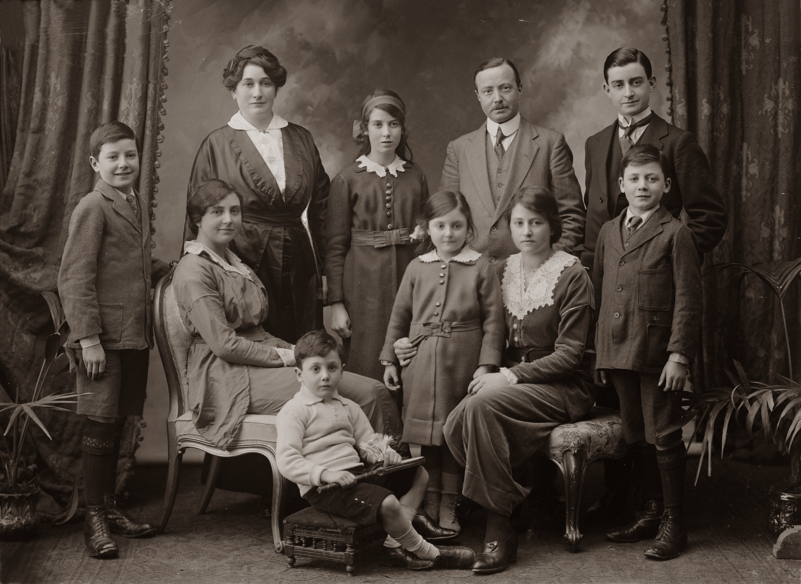

The journey begins in the 1820's...
1 / 6

Immigrant waiting for the train c. 1820
2 / 6

Immigrant traveling across country c. 1920
3 / 6

Immigrant off of a transatlantic ship c. 1860
4 / 6

Immigrant Admission Visa
5 / 6
Immigrant traveling c. 1910
6 / 6

Newly arrived to America family photo c. 1840
The start of the world's industrialization started in the 1800's with the United States at its center.